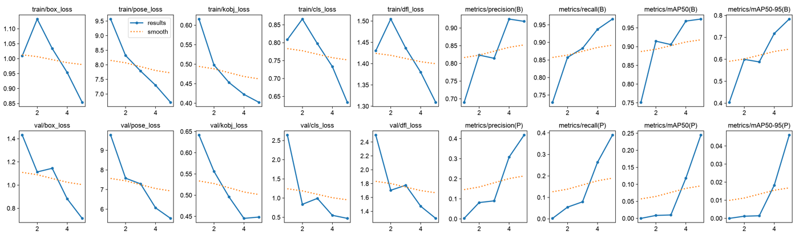
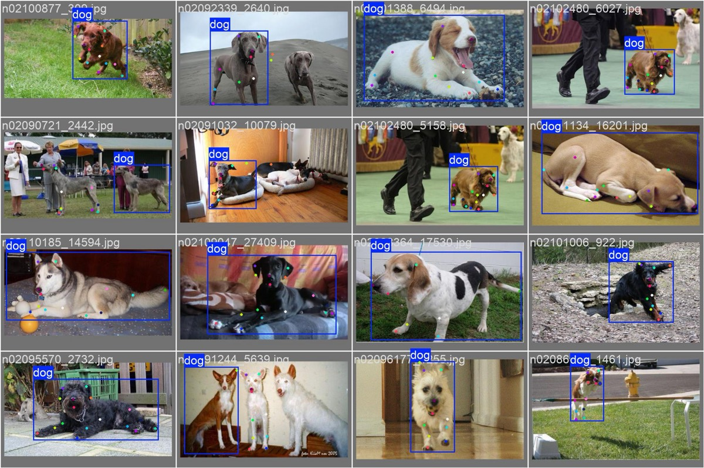
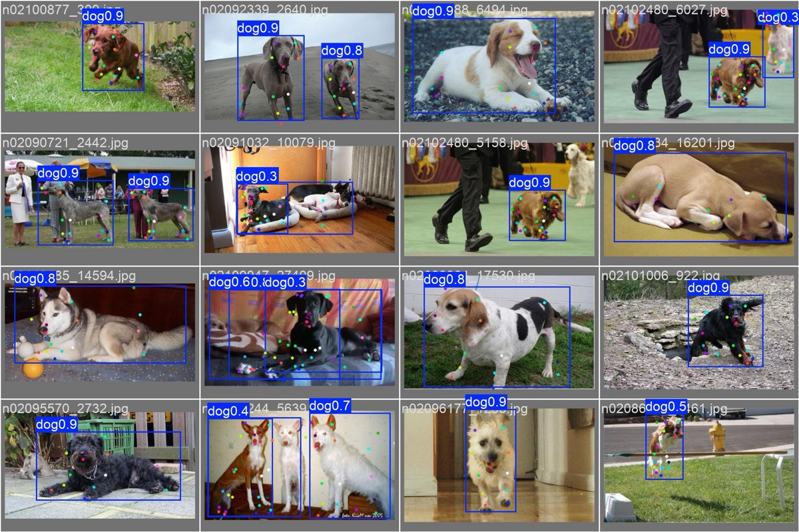
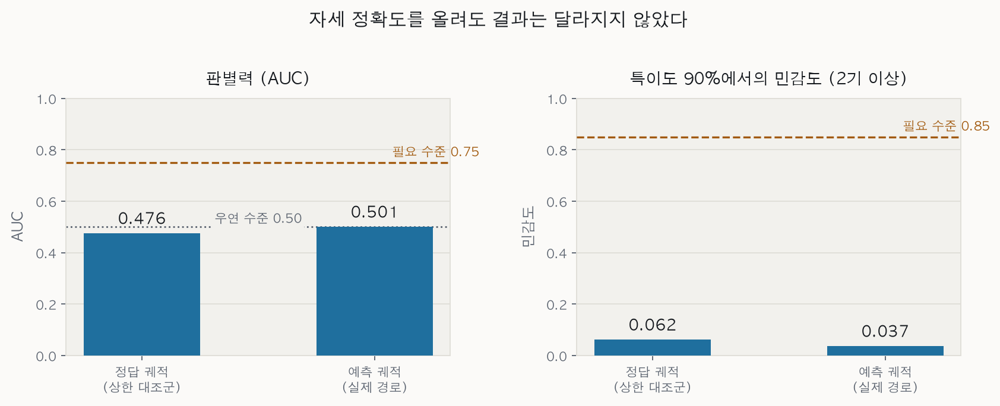
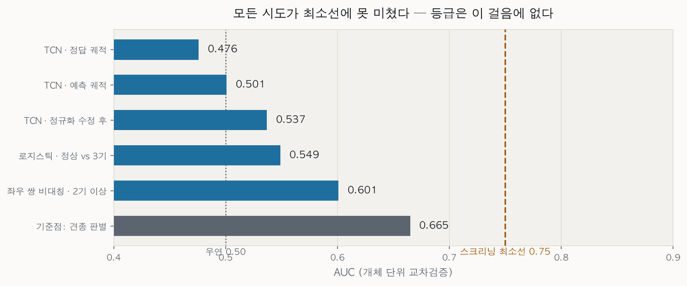

문제를 좁힌 과정, 아키텍처 결정의 근거, 그리고 실제로 깨진 것들. 성공한 부분보다 왜 그렇게 정했는지와 어디서 틀렸는지에 무게를 두고 적는다.
막연한 펫 헬스케어에서 출발해 네 단계로 좁혔다.
| Big Idea | 반려동물은 아픔을 말하지 못한다. 보호자의 알아차림이 건강 수명을 결정한다. |
|---|---|
| Essential Question | 말하지 못하는 반려견의 건강 이상을, 보호자는 어떻게 너무 늦기 전에 알아차릴 수 있는가. |
| Challenge | 장비나 전문 지식 없이, 일상 속에서 이상 신호를 조기에 발견하도록 돕는다. |
| Refined | 스마트폰으로 30초 걸음걸이를 찍는 것만으로 소형견 보호자가 슬개골과 관절의 신호를 발견하고 매달 변화를 추적하게 한다. |
| 좁힌 것 | 근거 |
|---|---|
| 이상 신호 전반에서 슬개골과 관절로 | 펫보험 지급액 1위 질환이고 소형견 유병 추정이 20에서 25퍼센트다. 보호자가 이미 걱정하고 있어 교육 비용이 없다. |
| 모든 반려견에서 소형견 우선으로 | 한국에서 많이 기르는 견종 상위권이 곧 고위험군이다. 타깃과 시장이 일치한다. |
| 일상 속 수단에서 30초 보행 영상으로 | 경쟁이 비어 있고 학습에 쓸 공개 데이터가 존재한다. |
| 조기 발견에 월간 추적을 더함 | 수술을 권하기 전 관찰 구간이 길다. 보호자가 가장 오래 불안해하는 시간이 곧 제품이 필요한 시간이다. |
시장 보고서의 조 단위 전망 대신, 같은 일을 하는 회사들이 실제로 벌어들인 돈을 기준선으로 삼았다.
| 사례 | 공개된 실적 |
|---|---|
| 국내 선두 앱 | 2024년 매출 36.4억 원에 영업손실 78.5억 원. 2025년 매출은 18.1억 원으로 반토막. 5년간 누적 손실 200억 원 이상 |
| 최유사 서비스 | 회원 8만 명, 2024년 매출 1.11억 원. 슬개골 AI 분석이라는 점에서 가장 가깝다 |
| 커머스 결합형 | 2023년 매출 239억 원에서 2024년 163억 원으로 역성장. 헬스케어를 앞세웠으나 매출은 커머스에서 나온다 |
| 해외 웨어러블 | 대형 펫 기업이 1.17억 달러에 인수했으나 2025년 8월 서비스를 완전히 종료했다 |
| 해외 성공 사례 | 구독자 130만 명에 연 반복매출 1억 유로. 핵심 가치는 건강 모니터링이 아니라 분실 방지였다 |
구독을 첫 수익원으로 잡지 않는다. 무료 스크리닝으로 신뢰와 데이터를 쌓고, 이상 소견을 병원 방문으로 잇는 구조를 만들고, 그다음에 보험사와의 공동 설계로 간다. 국내 반려동물병원의 71.8퍼센트가 1인 병원이므로 고가 소프트웨어를 파는 접근은 성립하지 않는다. 구독은 존재해야 하는 수익원이지 계획을 지탱하는 수익원이 아니다.
포즈 추정(공간)과 경량 시계열(시간)을 분리했다. 전부 기기 안에서 실행된다.
flowchart LR V["보행 영상
30초"] --> P["관절 추출
프레임마다 14점"] P --> N["궤적 정규화
크기와 방향 불변"] N --> T["시계열 분류기
좌우 대칭과 리듬"] T --> D{"판정"} D -->|"정상 범위"| R1["기록만 남기고
다음 달 리마인더"] D -->|"관찰 필요"| R2["한 달 뒤 재촬영
변화 비교"] D -->|"상담 권장"| R3["병원용 리포트
수의사에게 제시"] N -.->|"해석용 지표"| M["좌우 균형
보폭 주기"] M --> R2 M --> R3
| 선택 | 이유 |
|---|---|
| 포즈와 시계열 분리 (비디오 분류 기각) | 관절 좌표가 외형과 배경을 지워 촬영 환경 변화에 강하고, 2천여 영상으로도 학습이 성립한다. 좌우 대칭 같은 해석 가능한 지표가 그대로 제품 언어가 되는 것도 이유다. |
| OS 내장 포즈로 시작 | 무료이고 즉시 쓸 수 있다. 해자는 포즈 자체가 아니라 그 위의 파행 분류와 종단 데이터에 있다. |
| 특이도 우선 임계값 | 스크리닝의 최대 리스크는 위양성이다. 병원에 갔는데 정상이라는 경험이 반복되면 신뢰가 무너진다. |
| 개체 단위 데이터 분할 | 같은 개의 영상이 학습과 평가에 걸치면 성능이 부풀려진다. 프레임 단위 분할을 금지했다. |
학습은 통합메모리 192GiB에 24코어인 Apple Silicon 워크스테이션에서 원격으로 수행한다. 메모리가 넉넉해 배치 크기에 제약이 없고, 온디바이스에 올릴 수 없는 큰 모델을 교사로 세워 정확도의 상한을 재는 실험까지 가능하다.
컴퓨팅이 넉넉하니 큰 모델을 쓰면 되는가. 답은 그렇게 단순하지 않았다.
먼저 질문을 둘로 나눠야 했다. 학습 규모와 배포 규모는 서로 다른 제약을 받는다. 192GiB는 학습 장비의 사양이고, 제품이 도는 곳은 아이폰의 뉴럴 엔진이다.
동물 포즈 벤치마크에서 실제로 공개된 가중치만 모아 비교했다.
| 계열 | 파라미터 | 동물 벤치마크 | 기준 대비 |
|---|---|---|---|
| 경량 CNN (배포 후보) | 13.6M | 0.722 | 기준 |
| 중형 CNN | 28.5M | 0.722 | +0.000 |
| 대형 CNN | 63.6M | 0.728 | +0.006 |
| ViT 계열 중형 | 86M | 0.745 | +0.023 |
| ViT 계열 대형 | 307M | 0.804 | +0.082 |
이 앱은 실시간 카메라가 아니라 녹화된 30초 영상을 사후 처리한다. 프레임당 지연의 여유가 커서 큰 모델도 배치 처리로는 수 초면 끝난다. 진짜 병목은 앱 용량과 뉴럴 엔진 호환성이다. ViT 대형은 절반 정밀도로도 614MB라 온디바이스에 부적합하다.
가장 중요한 미지수다. 최종 지표는 관절 정확도가 아니라 파행 스크리닝의 민감도와 특이도다. 관절 정확도가 8포인트 오른다고 판정 성능이 얼마나 오르는지는 아무도 모른다. 게다가 파행 등급 라벨 자체의 관찰자 간 일치도가 낮다는 것이 문헌의 지적이다. 용량 한계가 아니라 라벨 한계일 가능성이 있다.
배포 모델은 유지하고 학습 쪽만 확대한다. 교사 모델을 대형 ViT로 올려 정확도의 상한을 재고, 그 격차가 다운스트림 지표를 얼마나 움직이는지 측정한 뒤에 배포 모델 교체를 판단한다. 판정 기준은 코드에 박아두었다. 지표 차이가 0.02 미만이면 현재 계획을 유지하고, 0.05 이상이면 배포 모델 교체를 과제로 승격한다.
시계열 분류기는 키우지 않는다. 영상 2천여 건에 개체 약 1천 마리 규모에서는 185K 파라미터도 과할 수 있고, 용량을 늘리면 과적합이 먼저 온다.
데이터를 기다리는 동안 학습 환경의 미지수를 먼저 없앴다. 공개된 개 8,476장 데이터로 실제로 학습이 도는가와 얼마나 빠른가를 측정했다.
커스텀 키포인트 개수로 헤드를 바꿔 학습하는 경로가 작동한다. 사전학습 가중치의 17개 관절 헤드가 24개로 재초기화된 뒤 정상 학습되었고, 포즈 정확도가 0에서 0.245까지 올라가는 중이었다. 우리가 쓸 14개 관절 경로가 같은 메커니즘이므로 대리 검증이 성립한다.
탐지는 5 epoch에 거의 수렴했으나(0.751에서 0.974) 포즈는 초기 구간이다. 헤드를 새로 배우기 때문이며 예상된 양상이다.
이 처리량을 우리 데이터 126,092 프레임에 그대로 대입하면 100 epoch에 8.1일이 나온다. 기존 문헌 기반 추정치인 2에서 5일보다 길다. 그런데 여기서 멈추지 않고 하드웨어 활용률을 계산해 본 것이 중요했다.
| forward 연산량 | 418 GFLOP/s |
| 학습 추정 (역전파 포함) | 약 1.25 TFLOP/s |
| 장비 피크 성능 | 약 27 TFLOP/s |
| 활용률 | 약 4.6퍼센트 |
그래서 학습 스케줄을 아직 확정하지 않는다. 다음 측정은 입력 크기를 절반으로 줄여 시간이 비례해 줄어드는지 보는 것이다. 비례하면 연산 병목이고, 거의 그대로면 입출력 병목이다. 이 한 번의 측정이 모델을 줄일지, 데이터 파이프라인을 고칠지를 가른다.

pose_loss가 관절 위치
오차이고 우리에게 가장 중요하다. 9.5에서 6.7로 내려갔지만 아직 기울기가 가파르다.
더 배울 것이 남았다는 뜻이다.(B)는 상자 곧 탐지, (P)는 포즈 곧 관절이다.mAP50(B)는 0.97까지 올라 거의 수렴했는데
mAP50(P)는 0.24에 머문다. 강아지를 찾는 일은 쉽고
관절을 정확히 짚는 일은 어렵다는 것을 한눈에 보여준다.

dog0.9는 확신도 90퍼센트라는 뜻이다. 정답과 거의 같은 자리에
그려져 있고, 정답에 없는 뒤쪽 강아지까지 찾아냈다.직감으로 정하지 않기 위해 각 갈림길마다 통과 기준을 숫자로 미리 적어 두었다. 아래가 그 전체 구조다.
flowchart TD S1["S1 학습 가능성
이 장비에서 도는가"] -->|"통과"| S2["S2 병목 특정
연산인가 입출력인가"] S1 -->|"실패"| ALT["백업 백본으로 전환"] S2 -->|"연산 병목"| M1["모델을 가볍게"] S2 -->|"입출력 병목"| M2["데이터 파이프라인 개선"] M1 --> E1["E1 포즈 정확도
내장 모델 대비 이득"] M2 --> E1 E1 --> E2["E2 다운스트림 이득
판정 성능이 올랐는가"] E2 --> E6["E6 용량 상한
큰 모델과의 격차"] E6 -->|"차이 0.02 미만"| K["현행 유지
병목은 라벨이다"] E6 -->|"0.02에서 0.05"| DI["증류로 회수 시도"] E6 -->|"0.05 이상"| BIG["큰 모델 탑재 검토"] K --> G["출시 게이트
특이도 0.90에서
민감도 0.85 이상"] DI --> G BIG --> G
공개 페이지에 없는 라벨 구조를 복원하는 것이 첫 관문이었다.
학습 데이터는 중소형견 1천 마리 이상을 전후좌우 네 방향에서 촬영한 보행 영상 2,094건과 12만여 장의 관절 라벨 프레임이다. 그런데 라벨의 실제 구조가 공개 페이지에 없었다. 구축기관의 발표 영상을 프레임 단위로 판독해 14개 해부학 랜드마크의 정확한 부위명, 다리별 좌우 등급 구조, 압력센서 컬럼 구성을 복원했다.
이 복원이 곧 기능 기획이 되었다. 다리별 등급이 라벨에 있다는 사실을 알았기 때문에 왼쪽 뒷다리 쪽 신호라는 제품 기능이 가능해졌다. 리서치가 곧 기획이었던 셈이다.
복원본은 어디까지나 추론이다. 실데이터가 도착하면 다섯 가지 가정을 확인해야 하며, 특히 관절 라벨의 실제 문자열이 가정과 다르면 변환 코드를 고쳐야 한다. 검증 노트북이 불일치를 감지하면 교체하라고 출력하도록 만들어 두었다.
견종마다 다리 길이 비율과 체형이 다르다. 현재 특징은 몸통 길이로 정규화해 크기에는 불변이지만 체형 비율까지 흡수하지는 못한다. 그렇다면 견종별로 모델을 나눠야 하는가.
나누지 않기로 했다. 견종 수가 너무 많아 견종별로 표본을 확보하고 1:1로 검증하는 일이 현실적이지 않고, 무엇보다 이 제품의 약속은 진단이 아니라 스크리닝이다. 이상 징후가 잡히면 수의사에게 보여줄 참고 자료를 만들어 주는 것으로 충분하며, 견종별 해석은 그 자리에서 전문가가 한다.
대신 두 가지를 한다. 첫째, 견종 계층별로 성능을 분리해 본다. 장모종과 단모종, 다리 길이 유형별로 검출률과 정확도를 따로 기록한다. 목적은 견종별 정확도를 올리는 것이 아니라 어디서 약한지 아는 것이다. 특정 계층에서 크게 나쁘면 그 경우에는 판정 대신 낮은 신뢰도나 재촬영을 표시한다. 둘째, 관절 각도를 특징에 추가한다. 각도는 다리 길이와 무관하므로 견종 의존을 원천적으로 줄인다. 견종별 데이터를 모으지 않고 얻는 개선이다.
라벨 10만 건을 전수 파싱해 미리 세워둔 가정 다섯 개를 검증했다. 셋이 틀렸고, 그중 둘은 그대로 뒀다면 학습 전체가 무의미해질 것이었다.
| 가정 | 결과 | 내용 |
|---|---|---|
| 파일명 규칙 | 맞음 | 병원과 촬영 일시와 프레임 번호 구조가 예상대로였다 |
| 세션 내 등급 일관성 | 재검증 | 방향을 키에 넣어 다시 세자 한 구간 안에서 등급이 0에서 4까지 섞이는 사례가 드러났다. 현재는 최댓값을 쓰는데 이는 등급을 올리는 방향이라 특이도 우선 원칙과 어긋난다. 비율을 세는 중이다 |
| 다리별 좌우 등급 | 맞음 | 좌우가 서로 다른 사례가 다수다. 다만 단위가 네 다리가 아니라 좌우 무릎 둘이었다. 설계를 바꾼 발견 장에서 이어진다 |
| 관절 라벨 | 틀림 | 14개 한글명을 가정했으나 12개 영문 해부학명이었다. 발끝이 좌우 2점이라는 추정도 틀렸다 |
| 좌표 형식 | 틀림 | 픽셀로 가정했으나 이미 0에서 1로 정규화된 문자열이었다 |
| 세션 단위 | 틀림 | 경로에 촬영 방향이 있는데 키에서 빠져 4개 시퀀스가 하나로 뭉쳤다 |
등급 분포는 공표치와 0.5퍼센트포인트 이내로 일치했다. 정상 55.7퍼센트, 1기 9.6, 2기 14.4, 3기 17.5, 4기 2.8이다. 라벨의 의미 자체는 바르게 읽고 있었다는 뜻이다. 다만 개체 단위 분할은 아직 확정하지 못했다. 개체를 식별하는 키에 촬영 날짜를 넣으면 760마리가 되고 빼면 179마리가 되는데, 전자는 같은 개가 다른 날 오면 갈라져 학습과 평가에 함께 들어갈 수 있고 후자는 서로 다른 개를 하나로 묶는다. 어느 쪽도 정답이 아니므로 두 기준으로 모두 평가하고 그 차이를 누수의 크기로 함께 보고한다.
견종 분포 상위가 푸들, 말티즈, 비숑, 치와와, 포메라니안이다. 이 프로젝트가 타깃으로 삼은 한국 소형견 구성과 정확히 겹친다. 시장을 보고 문제를 좁힌 판단이 데이터에서도 확인된 셈이다. 다만 같은 견종이 다른 이름으로 들어 있어 정규화가 필요했다.
라벨을 더 깊이 파고들자 스키마 수준의 오류가 아니라 모델 설계 자체를 다시 세워야 하는 사실 넷이 나왔다. 원천 데이터를 받는 동안 라벨만으로 확인할 수 있는 것을 전부 확인한 결과다.
| 발견 | 전제였던 것 | 실제 |
|---|---|---|
| 원천의 정체 | 30초 영상 파일이 들어 있다 | 영상이 아니라 라벨과 1대1로 대응하는 이미지 10만 장이다. 교집합 100,874, 차집합 0으로 완전히 맞아떨어진다 |
| 라벨의 범위 | 영상 전체가 라벨링되어 있다 | 긴 촬영에서 연속 20여 프레임 한 토막만 남아 있다. 늘릴 방법이 없다 |
| 시계열 길이 | 15프레임으로 10초, 150프레임 창 | 방향 구간의 중앙값이 22프레임이다. 150프레임 창을 채우는 구간은 1.3퍼센트뿐이었다 |
| 관절의 구성 | 네 다리의 발끝을 각각 추적한다 | 12개가 전부 외측 랜드마크로 한쪽 면뿐이다. 앞다리 하나 뒷다리 하나다 |
| 쓸 수 있는 시점 | 네 방향을 모두 쓴다 | 측면 둘만 안정적이다. 정면은 라벨 집합이 33종으로 매번 다르다 |
입력을 고정 길이로 맞추는 코드가 짧은 구간을 0으로 채우고 있었다. 창이 150이고 실제가 22면 입력 텐서의 85퍼센트가 0이다. 게다가 좌표가 0에서 1로 정규화되어 있으므로 0은 빈 값이 아니라 관절이 원점에 있다는 뜻이 된다. 존재하지 않는 자세를 8할 넘게 먹이는 셈이다.
창을 24로 내리고, 0 패딩을 마지막 프레임 반복으로 바꿨다. 24는 실측 중앙값 22에 가장 가까워 크롭과 패딩이 모두 최소가 되는 값이다. 증강의 시간 크롭 조건도 45프레임 이상이라 한 번도 발동하지 않고 있었다.
파행 판정의 1차 신호는 좌우 비대칭이다. 그런데 한 프레임에 한쪽 다리만 있으면 프레임 안에서 좌우를 비교할 수 없다. 비교의 단위가 프레임에서 시점으로 올라간다.
라벨을 다시 보니 데이터가 처음부터 이 구조를 전제하고 있었다. 등급이 좌우 무릎별로 따로 매겨져 있다. 왼쪽 측면 영상으로 왼쪽 무릎을, 오른쪽 측면 영상으로 오른쪽 무릎을 예측한다. 좌우를 한 덩어리로 합치려던 원안보다 자연스럽고, 표본도 두 배가 된다. 제품이 약속한 어느 쪽 무릎인지에 대한 답도 여기서 직접 나온다.
등급이 다섯 단계인데 표본이 1,572건이다. 백본 문서에서 큰 모델의 이득이 포화한다는 실측을 근거로 배포 모델을 키우지 않기로 했고, 그때 병목이 모델 용량이 아니라 라벨일 가능성을 함께 적어두었다. 그 가능성이 사실 쪽으로 기울고 있다. 남는 컴퓨팅은 모델을 키우는 데가 아니라 증강과 라벨 정제에 쓰는 것이 맞다.
이미지가 도착한 뒤 관절 좌표로 개의 경계 상자를 재보니 원본 1920×1080에서 개가 차지하는 폭이 23퍼센트에 지나지 않았다. 상자 중앙값은 299×350이다. 전체 화면을 줄여 모델에 넣으면 개는 60픽셀도 되지 않는다. 무릎을 그 크기에서 찾는 것은 무리다. 상자를 잘라 넣는 방식이 선택이 아니라 전제가 되었다.
같은 측정이 예정된 실험 하나의 답을 미리 줬다. 해상도를 올려 가림을 이기려던 가설이었는데, 384로 올리면 상자의 44퍼센트가 확대될 뿐이다. 확대는 없던 정보를 만들지 못한다. 256으로 확정하고 그 실험의 우선순위를 내렸다. 측정 하나가 실험 하나를 지웠다.
변환을 돌리자 10만 건 중 7만 2천 건만 나왔다. 관절이 부족해 버려지는 것은 2,437건뿐인데 계산이 맞지 않았다. 이유는 같은 이름의 관절이 두 번 붙어 있는 것이었다. 정면에서는 앞다리가 좌우로 다 보이므로 팔꿈치와 손목과 앞발이 두 벌씩 있다. 후면은 뒷다리가 두 벌이다.
정면과 후면은 12개 단일 측면 스키마로 표현할 수 없는 다른 라벨링 체계다. 포즈 학습은 측면 48,938장으로 한다. 앱도 사용자에게 옆에서 찍으라고 안내하므로 학습 조건과 추론 조건이 오히려 일치한다.
10만 장으로 시작해 실제로 학습에 들어가는 것이 얼마인지, 어디서 왜 줄어드는지를 한 줄로 세우면 이렇게 된다. 줄어든 자리마다 이유가 다르다.
학습을 걸기 전에 입력 방식을 다시 봤다. 원본은 1920×1080이고 개는 그중 폭의 23퍼센트다. 전체 화면을 줄여 모델에 넣으면 연산의 대부분이 배경에 쓰인다. 우리에게는 모든 프레임의 관절 좌표가 있으므로 개만 잘라낸 데이터셋을 미리 만들 수 있다.
| 방식 | 입력 | 개의 크기 | 상대 연산량 |
|---|---|---|---|
| 전체 프레임 | 1920×1080을 960으로 | 약 220픽셀 | 1배 |
| 상자 크롭 | 개만 잘라 256으로 | 약 250픽셀 | 약 14분의 1 |
실제로 만들어보니 45기가바이트가 1.4기가바이트가 됐다. 32분의 1이다. 이 크기면 데이터 전체를 메모리에 올려두고 학습할 수 있어 디스크에서 읽는 비용까지 사라진다. 연산과 입출력 양쪽이 함께 줄었다.
정보는 늘고 연산은 준다. 배경 의존도 함께 줄어드니 촬영장을 외우는 문제에도 유리하다. 무엇보다 이 데이터셋은 본선 백본이 쓰는 방식과 같아서 두 경로가 공유한다. 기기에서는 시스템이 제공하는 동물 탐지가 상자를 주므로 추론 경로도 성립한다.
상자 크기를 실측하고 입력을 256으로 정한 뒤, 전체 프레임을 쓰는 경로의 학습 명령까지 256으로 바꿨다. 그러면 개가 59픽셀이 된다. 그 크기에서 무릎은 찾을 수 없다. 첫 학습에서 모든 지표가 0으로 나왔고, 처음에는 라벨이 매칭되지 않은 줄 알았다.
매칭은 정상이었다. 파일 3만 5천 개가 전부 짝이 맞았고 손상된 라벨도 없었다. 지표가 0인 것은 개가 너무 작아 모델이 아무것도 탐지하지 못한 결과였다. 같은 이름의 설정값이 방식에 따라 다른 값을 가져야 한다는 것을 문서에 적어뒀다.
크롭 데이터로 11시간을 학습했다. 시간을 정해두고 그 안에서 가능한 만큼 도는 방식이라 45회 반복에서 마무리됐다. 검증 지표는 0.8686, 한 번도 보지 않은 시험셋에서 0.8690이다. 두 값이 같다는 것은 검증셋에 맞춰 고른 효과가 없었다는 뜻이고, 개체 단위 분할이 제대로 작동했다는 증거이기도 하다.
그래서 평균 지표 대신 관절마다 얼마나 빗나가는지를 직접 쟀다. 평균은 무릎 하나가 나빠도 가려버리는데, 우리에게는 그 무릎이 전부다.
| 관절 | 정확도 | 중앙 오차 | 성격 |
|---|---|---|---|
| 뒷발끝 | 0.927 | 0.017 | 가장 정확하다 |
| 앞발끝 | 0.930 | 0.017 | 시각적으로 뚜렷한 지점 |
| 비절 | 0.888 | 0.020 | |
| 무릎 | 0.793 | 0.030 | 슬개골 판정의 핵심 |
| 장골능선 | 0.727 | 0.033 | |
| 견갑극 | 0.628 | 0.041 | 가장 부정확하다 |
말단이 정확하고 몸통이 부정확하다. 발끝은 눈에 보이는 지점이지만 견갑극이나 등뼈는 털에 덮인 뼈의 위치라 사람이 찍어도 흔들린다. 모델이 나빠서가 아니라 라벨 자체의 일관성 한계에 가까워졌을 가능성이 있다.
무릎의 중앙 오차 0.030은 개체 상자 대각선의 3퍼센트, 원본 해상도로 약 14픽셀이다. 이 정도면 충분한가. 지금은 답할 수 없다. 기준은 절대 오차가 아니라 파행이 만드는 궤적 차이가 이 오차보다 큰가이고, 그건 시계열 분류기를 붙여야 나온다. 그래서 여기서 자세를 더 다듬는 대신 다음 단계로 넘어간다.
학습 대상으로 쓰던 값에 문제가 있었다. 프레임마다 매겨진 정도 값이 한 시퀀스 안에서 0에서 4까지 섞이는데, 그중 최댓값을 세션의 등급으로 삼고 있었다. 한 프레임이라도 4면 그 촬영 전체가 4가 된다. 정상인 개를 이상으로 부르는 방향이고, 위양성을 줄이겠다는 이 제품의 원칙과 정반대다.
다행히 라벨에는 다른 값이 하나 더 있었다. 수의사가 좌우 무릎별로 매긴 임상 등급이다. 이쪽은 세션 안에서 흔들리지 않는다. 854개 중 852개가 완전히 일정했고, 흔들린 둘은 같은 촬영 하나였다. 게다가 우리 분류 단위인 측면별 예측과 정확히 맞는다.
궤적을 시계열 분류기에 넣었다. 두 벌을 만들어 나란히 돌렸다. 하나는 방금 학습한 모델이 예측한 좌표, 하나는 사람이 찍은 정답 좌표다. 후자는 도달 가능한 상한이다. 자세 정확도가 결과를 얼마나 움직이는지 알아내려는 실험이었다.

| 입력 | 판별력 | 민감도(2기 이상) | 필요 수준 |
|---|---|---|---|
| 정답 좌표 (상한) | 0.476 | 6.2% | 0.75 / 85% |
| 예측 좌표 (실제 경로) | 0.501 | 3.7% |
백본을 고를 때 가장 중요한 미지수로 적어둔 칸이 이렇게 채워졌다. 큰 모델을 쓰지 않기로 한 판단은 옳았지만, 옳았던 이유가 예상과 다르다. 절약한 것이 아니라 애초에 그 축이 결과를 움직이지 않았다.
후보를 하나씩 지웠다. 라벨과 궤적의 짝은 좌표 대조로 완전 일치했고(오차 0.0000), 견종은 잡히므로 파이프라인의 모든 단계가 검증됐다. 그 위에서 등급 정의를 세 가지로 바꾸고, 특징을 세 가지로 바꾸고, 모델을 딥러닝에서 로지스틱 회귀까지 내려봤다. 결과는 전부 같았다.

가장 무거운 근거는 마지막 실험이다. 파행의 임상적 정의가 좌우 비대칭이라 같은 촬영의 왼쪽과 오른쪽 걸음을 쌍으로 묶어 그 차이를 특징으로 넣었다. 그런데 수의사가 좌우를 다르게 매긴 개조차 걸음의 좌우 차이로 구분되지 않았다(0.557). 비대칭 라벨을 비대칭 특징으로 못 맞추면 남는 설명은 하나다. 이 등급은 정지 상태에서 무릎을 만져 매기는 임상값이고, 이 데이터의 짧은 걸음 토막에는 그 정보가 담겨 있지 않다.
분류기가 접혔다고 제품이 접히는 것은 아니다. 자세추정 모델은 살아 있고, 그것만으로 성립하는 방향이 있다. 결정은 아직 내리지 않았다. 선택지와 근거만 정리해둔다.
| 방향 | 내용 | 왜 성립하는가 |
|---|---|---|
| 변화 추적 | 절대 등급 대신 같은 개의 시간에 따른 변화를 본다. 매달 찍어 지난달과 비교한다 | 개체 간 비교가 아니라 개체 내 비교라 견종과 체형 변수가 사라진다. 관찰 구간이 긴 병의 성격과도 맞는다 |
| 비대칭 제시 | 등급을 맞히지 않고 좌우 차이 수치와 궤적만 보여준다. 판단은 수의사가 한다 | 스크리닝이 아니라 기록 도구가 된다. 의료 단정 표현 문제도 함께 사라진다 |
| 진료 보조 자료 | 수의사에게 보여줄 참고 자료를 만든다. 궤적 그래프, 다리별 지표, 대표 프레임 | 분류기 없이 지금 당장 가능하다. 자세추정 모델만으로 성립한다 |
| 자체 데이터 수집 | 보행 중 파행 라벨이 붙은 데이터를 직접 만든다 | 비용이 크다. 위 셋으로 서비스를 시작한 뒤의 선택지다 |
공통점이 있다. 셋 다 숫자를 만드는 일은 기계가 하고 숫자를 읽고 결정하는 일은 사람이 하는 구조다. 등급 분류가 실패하면서 오히려 이 프로젝트의 원칙과 맞는 자리로 돌아온 셈이다.
방향 이름의 Left가 카메라 위치인지 진행 방향인지 몰랐다. 후자라면 왼쪽 영상에 오른쪽 다리가 찍히고 좌우 등급 매핑이 통째로 뒤집힌다. 이미지를 열어 확인하려 했으나 그럴 필요가 없었다. 머리와 엉덩이의 좌표 순서로 개가 어느 쪽을 향하는지 계산하면 보이는 면이 정해진다. 측면 촬영에서 개가 화면 오른쪽을 향하면 카메라에는 오른쪽 옆구리가 보인다.
계산 결과 왼쪽 폴더의 99.7퍼센트가 개의 왼쪽 면이었다. 카메라 위치가 맞다. 어긋나는 0.3퍼센트는 개가 몸을 돌린 순간이거나 라벨 오류이므로, 이 계산을 촬영 품질 게이트로 그대로 쓴다. 폴더 이름을 믿는 것보다 좌표를 믿는 편이 안전하다.
프로젝트가 길어질수록 기억이 자산이 된다. 결정과 스펙과 절차를 자동으로 축적하는 로컬 시스템을 만들었다.
외부 의존성과 API 키가 없어 어디서든 실행되고, 증류는 이벤트가 쌓였을 때만 일어나 비용이 통제된다. 다만 이 시스템도 한 번 조용히 실패했다. 아래에 적는다.
여기까지 오면서 실제로 깨진 것들이다. 대부분은 알고리즘이 아니라 환경과 검증 습관에서 나왔다.
| 증상 | 원인과 교훈 |
|---|---|
| 파일 전송이 시작도 못 하고 죽음 | 운영체제에 기본 탑재된 동기화 도구가 2006년 버전과 호환되는 구현이라, 최신 문서에 나오는 옵션이 아예 없었다. 플랫폼 기본 도구의 실제 버전을 확인하고 쓴다. |
| 모델 변환이 조용히 실패 | 딥러닝 프레임워크의 최신 버전이 변환 도구의 검증 범위를 벗어났다. 경고만 뜨고 진행되다가 변환 단계에서 깨진다. 배포 경로의 의존성은 버전을 고정한다. |
| 환경 구성이 절반만 된 채 종료 | 무거운 선택 의존성 하나가 빌드에 실패했는데, 스크립트가 오류에서 즉시 중단되도록 설정되어 있어 나머지 필수 패키지까지 설치되지 않았다. 실패 가능성이 높은 선택 의존성은 분리해서 설치한다. |
| 문법 검사를 통과한 스크립트가 실행 중 죽음 | 운영체제 기본 셸이 2007년 버전이라 빈 배열을 다루는 방식이 현대 버전과 달랐다. 문법은 옳고 실행만 실패하는 종류였다. 셸 스크립트는 문법 검사가 아니라 실행까지 확인한다. |
| 동기화가 바뀐 파일을 건너뜀 | 기본 판정이 크기와 수정시각 비교라, 크기가 같고 같은 초에 쓰인 파일의 변경을 놓쳤다. 지표 파일처럼 숫자 몇 개만 바뀌는 경우가 정확히 이 함정이다. 동기화 도구의 판정 기준을 알고 쓴다. 체크섬 비교로 바꿨다. |
| 실행한 노트북을 회수했더니 결과가 비어 있음 | 편집기에서 노트북을 실행해도 파일에는 저장되지 않는다. 화면에 결과가 떠 있으니 성공한 줄 알았다. 화면에서 본 것과 파일에 남은 것은 다르다. |
| 기억 시스템이 결정 여덟 건을 흘림 | 자동 요약을 맡긴 보조 모델이 하루치 의사결정을 기록할 내용 없음으로 판정했다. 자동화의 출력은 주기적으로 사람이 확인해야 한다. 프롬프트를 구체화하고 더 큰 모델로 바꾸자 제대로 쌓였다. |
| 44GB 아카이브가 크기는 맞는데 열리지 않음 | 공식 다운로더가 분할 조각을 문자열 순으로 이어 붙인다. 조각 이름이 바이트 오프셋이라 자릿수가 늘어나는 순간 순서가 뒤집힌다. 10GB 미만 파일에서는 드러나지 않아 작은 것 셋은 무사했다. 크기가 맞다고 내용이 맞는 것은 아니다. |
| 검증 기준을 두 번 연속 잘못 잡음 | 압축 파일의 항목 수를 세는 데 디렉토리까지 포함해 비율을 왜곡했고, 그 잘못된 숫자로 정상인 데이터를 손상으로 오판했다. 반대로 다른 하나는 통과시켜 원본을 지워버렸다. 검증 로직 자체가 검증되지 않으면 검증이 아니다. |
| 7시간을 받은 40GB가 오류 하나 없이 깨져 있음 | 공식 다운로더가 전송 실패를 감지하지 못한다. 종료 코드를 내려받기 명령이 아니라 그 뒤에 실행된 문자열 처리 명령에서 읽고 있었다. 그래서 전송이 끊겨도 항상 성공으로 판정하고, 잘린 압축 파일을 그대로 병합한 뒤 재개에 쓸 원본까지 지웠다. 받은 크기가 47.6GB가 아니라 40.8GB였다는 사실은 파일을 열어보고서야 드러났다. 조용히 실패하는 것이 가장 위험하다. |
| 수정한 패치가 문법 검사는 통과하고 동작은 틀림 | 치환 문자열의 역참조가 백슬래시 처리에 밀려 글자 그대로 박혔다. 결과 스크립트는 문법상 옳아 검사를 통과했지만 실행하면 엉뚱한 명령이 된다. 실제 대상 파일에 적용해 결과 줄을 눈으로 확인하고서야 발견했다. 같은 교훈을 두 번째로 배웠다. |
| 보호막을 덧대자 잠자던 버그가 깨어남 | 다운로더의 순서 문제를 고치면서 조각 파일을 지우지 않고 남기도록 바꿨다. 그런데 해제 스크립트 맨 앞에 똑같은 문자열 순 병합 코드가 남아 있었고, 남겨둔 조각을 다시 붙이며 검사를 통과한 44GB를 덮어썼다. 한쪽을 고치면서 같은 결함이 다른 곳에 있는지 보지 않았다. 개선 하나가 실패 하나를 만들었다. 순이득이 없었다. |
| 도구마다 같은 파일을 다르게 판정함 | 조각을 이어 붙인 압축 파일은 앞머리에 분할 아카이브 표시가 남는다. 명령행 해제 도구는 이를 보고 마지막 조각을 내놓으라며 거부하고, 파이썬은 끝의 목차를 읽으므로 정상 처리한다. 파일이 깨진 것과 도구가 못 읽는 것은 다르다. |
| 변환 결과가 원본의 72퍼센트 | 관절 부족으로 버려지는 것은 2퍼센트인데 28퍼센트가 사라졌다. 정면과 후면이 같은 이름의 관절을 좌우로 두 번 라벨링하고 있었고, 변환기가 두 번째로 첫 번째를 덮어쓰고 있었다. 후면은 문턱을 통과해 절반짜리 골격 2만 3천 건이 조용히 학습 데이터가 되어 있었다. 숫자가 맞지 않는다는 위화감이 유일한 단서였다. |
| 첫 학습에서 모든 지표가 0으로 나옴 | 라벨이 매칭되지 않은 줄 알고 파일 이름부터 뒤졌다. 3만 5천 개가 전부 짝이 맞았고 손상도 없었다. 원인은 입력 크기였다. 상자 크롭용 값을 전체 프레임 경로에 그대로 써서 개가 59픽셀이 되어 있었다. 같은 이름의 설정값이 방식에 따라 다른 값을 가져야 했다. |
| 확인하려 연 그림이 다른 실험의 것 | 학습 배치 이미지를 열어 관절 위치를 확인했는데 파일명이 공개 데이터셋의 것이었다. 이전 실험 산출물을 보고 있었다. 관절은 잘 찍혀 있었지만 우리 데이터에 대한 검증이 아니었다. 실행한 폴더를 직접 지정해 다시 열고서야 확인이 끝났다. |
| 여러 줄을 붙여넣자 비밀값이 오염됨 | 비밀번호 입력을 기다리는 명령이 다음 줄의 명령어를 값으로 삼켰다. 그 결과 실행되어야 할 명령이 사라졌다. 입력을 기다리는 명령은 한 줄씩 실행한다. |
깨진 것 중 상당수는 알고리즘이 아니라 손이 미끄러진 종류였다. 모듈 경로를 잘못 잡고, 셸 문법을 다른 셸 기준으로 쓰고, 명령을 옮겨 적다 잘못된 글자를 흘렸다. 개별로는 사소하지만 반복되면 시간을 크게 먹는다. 그래서 겪을 때마다 규칙으로 바꿔 프로젝트 규칙 문서에 적었다.
| 겪은 일 | 남긴 규칙 |
|---|---|
| 패키지를 못 찾아 실행 실패 | 코드가 하위 폴더에 있어 저장소 최상단에서는 모듈로 실행되지 않는다. 데이터 경로 기준에 따라 실행 형태가 갈린다는 것을 두 가지 형태로 적어뒀다. 같은 오류를 두 번 냈다 |
| 비밀값 입력 명령이 동작하지 않음 | 서버 셸이 다른 종류라 같은 옵션이 다른 뜻이었다. 문서의 예시가 어느 셸 기준인지 확인하고 쓴다 |
| 명령을 옮겨 적다 불필요한 글자가 섞임 | 붙여넣기 전에 끝부분을 눈으로 본다. 리다이렉션 기호 하나가 실행을 통째로 막는다 |
| 인자가 너무 많다며 실패 | 파일 5만 개를 셸이 인자로 펼치려다 한계를 넘었다. 목록을 다루는 명령은 한 줄씩 흘려보내는 방식으로 쓴다 |
| 확인한 산출물이 다른 실험의 것 | 최근 파일을 찾아 여는 방식은 예전 결과를 집는다. 실행한 폴더를 직접 지정해서 연다 |
기능을 잘못 만든 것이 아니라 확인했다고 믿었지만 실제로는 확인하지 않은 것에서 나왔다. 문법 검사는 통과했고, 문서의 옵션은 존재했고, 동기화는 성공했다고 보고했고, 화면에는 결과가 떠 있었다. 그런데 파일에는 아무것도 남지 않았거나 조용히 건너뛰었다. 확인의 단위를 작성했다에서 돌려보고 결과물을 열어봤다로 옮기는 것이 이 구간의 교훈이며, 이 교훈은 한 번 배운 뒤에도 하루 만에 다시 틀렸다.
학습 소요 시간을 문헌 기반으로 2에서 5일이라 적어두고 있었다. 실측해 보니 같은 조건에서 8.1일이었다. 더 중요한 것은 그다음이다. 숫자만 보고 모델을 줄이려 했다면 틀렸을 것이다. 활용률을 계산해 보니 병목이 연산이 아니었다. 측정은 숫자를 얻는 일이 아니라 어느 방향으로 고칠지를 가르는 일이다.
모델 설계나 알고리즘에서 막힌 적은 아직 없다. 막힌 것은 전부 버전, 경로, 권한, 셸, 붙여넣기였다. 준비 구간의 시간이 어디로 가는지를 정직하게 보여주는 기록이라 남긴다.
2026년 8월, 첫 준비 구간에서 배운 것들.
슬개골에서 시작한 것은 의학이 아니라 시장의 결정이었다. 인기 견종 상위권이 전부 고위험군이라는 사실이 확인되는 순간 타깃과 데이터와 질환이 한 점에서 만났다. 범용 펫 헬스 AI였다면 아무것도 검증하지 못했을 것이다.
데이터셋의 라벨 구조는 공개 페이지에 없었다. 발표 영상을 프레임 단위로 판독해 복원했고, 그것이 다리별 신호라는 제품 기능이 되었다. 리서치가 곧 기능 기획이었다.
수의학 문헌상 탈구 등급은 촉진으로 판정하며 등급과 절뚝임의 상관은 약하다. 초기 단계는 영상으로 원리상 거의 잡히지 않는다. 태스크를 등급 진단에서 이상 징후 감지로 재정의하자 모델 설계와 규제 리스크가 동시에 풀렸다.
이상 신호를 남발하면 병원에서 정상 판정을 받은 사용자가 이탈한다. 임계값은 특이도 우선으로 잡고, 촬영 품질이 낮으면 판정 대신 재촬영을 안내한다. 언어와 임계값과 UX 게이트가 하나의 체계다.
실데이터가 없는 동안 인공 궤적에 파행 신호를 심고 학습 하네스가 그것을 되찾는지 확인했다. 처음엔 실패했고 기하 구조를 현실적으로 고친 뒤 통과했다. 덕분에 데이터가 도착하면 바로 학습으로 들어갈 수 있다. 데이터를 기다리는 시간에 파이프라인을 검증해 두는 것이 준비 구간의 핵심이었다.
라벨 검증에서 가정 셋이 틀렸는데, 둘은 오류 없이 학습이 돌아가되 아무것도 배우지 못하는 종류였다. 이미 정규화된 좌표를 한 번 더 나누면 모든 값이 0 근처로 뭉개지지만 예외는 나지 않는다. 서로 다른 촬영 각도가 한 궤적에 섞여도 코드는 멈추지 않는다. 데이터를 만지기 전에 가정을 글로 적어두고 전수로 확인하는 절차가 이 종류를 잡아내는 유일한 방법이었다.
다운로드가 세 번 깨졌다. 두 번은 제공된 도구의 결함이었고 한 번은 그것을 막으려고 덧댄 내 자동화가 만든 것이었다. 조각 파일을 보존하도록 바꾸자, 다른 스크립트에 잠자던 같은 결함이 깨어나 검사를 통과한 44기가바이트를 덮어썼다. 자동화가 막아준 실패 하나와 만들어낸 실패 하나. 순이득이 없었다. 마지막에는 스크립트를 걷어내고 눈에 보이는 명령 세 줄로 끝냈다.
변환 결과가 원본의 72퍼센트였다. 버려질 이유는 2퍼센트뿐이었다. 그 6퍼센트포인트가 아니라 26퍼센트포인트의 설명되지 않는 차이를 따라가자, 정면과 후면이 같은 이름의 관절을 좌우로 두 번 라벨링하고 있다는 사실이 나왔다. 그중 후면 2만 3천 건은 검사를 통과해 절반짜리 골격인 채로 학습 데이터가 되어 있었다. 오류도 경고도 없었다. 합계가 맞지 않는다는 사소한 감각이 유일한 단서였다.
해상도를 올려 가림을 이길 수 있는지 실험할 계획이었다. 그런데 개체 상자를 실측하니 입력을 384로 올리면 상자의 44퍼센트가 확대될 뿐이었다. 확대는 없던 정보를 만들지 못한다. 며칠짜리 실험이 한 번의 측정으로 정리됐다. 실험을 설계하기 전에 데이터를 재보는 편이 싸다.
첫 모델의 지표가 공개 벤치마크 최고 수준을 넘었다. 기뻐할 일이 아니라 왜 그런지 설명할 수 있어야 하는 일이었다. 개를 잘라 화면을 채웠고, 관절 수가 적어 허용오차가 느슨해졌고, 검증셋마저 같은 촬영장이다. 세 가지가 모두 값을 부풀린다. 실제 사용 환경에서는 이 숫자가 나오지 않는다고 적어두는 편이, 나중에 왜 다르냐고 묻는 것보다 낫다.
세션 등급이 프레임마다 흔들려 최댓값을 쓰고 있었고, 그것이 등급을 부풀린다는 것을 알았다. 중앙값으로 바꿀지 고민하던 중 라벨에 이미 수의사가 매긴 좌우 무릎 임상 등급이 따로 있다는 것을 발견했다. 흔들리지도 않고 우리 분류 단위와도 맞는다. 고칠 방법을 찾기 전에 가진 것을 다 살펴보는 순서였다면 고민할 필요도 없었다.
분류기가 우연 수준에 머물렀다. 목표는 이루지 못했지만 정답 좌표로도 똑같이 실패했다는 사실이 하나를 확실히 정리한다. 자세 정확도는 병목이 아니다. 이걸 모른 채였다면 더 큰 자세 모델을 학습시키는 데 며칠을 더 썼을 것이다. 상한 대조군을 같이 돌린 것이 그 며칠을 아꼈다.
분류기 구조를 시도하기 전에 "1시간 안에 0.65를 못 넘으면 중단"을 적어뒀다. 마지막 실험이 0.601까지 올라왔을 때 조금만 더 만지면 될 것 같은 유혹이 실제로 왔다. 기준을 결과가 나온 뒤에 정하면 반드시 결과에 맞춰 움직인다. 미리 적어둔 한 줄이 반나절을 아꼈고, 그 시간에 확실한 산출물이 나왔다.
이 구간에서 만든 스크립트 중 절반은 다시 쓰지 않을 것이다. 그런데 그 과정에서 적어둔 규칙은 계속 쓴다. 모듈을 어디서 실행하는지, 셸이 어떤 종류인지, 검증을 무엇으로 하는지. 코드는 상황이 바뀌면 버려지지만 규칙은 다음 상황에도 적용된다. 그래서 깨질 때마다 고치는 것으로 끝내지 않고 한 줄로 옮겨 적었다.
이 프로젝트는 AI와 페어로 만든다. 지키는 원칙은 두 줄이다. 숫자를 만드는 일은 맡겨도 숫자를 읽고 결정하는 일은 내 몫이다. 화면을 만드는 일은 맡겨도 화면이 하는 말을 정하는 일은 내 몫이다. 기억 하니스는 그 결정들을 잊지 않기 위한 장치다.
시행착오를 포함한 시간순 기록.
경쟁 리서치로 빈 포지션을 확인했다. 기기 없이 카메라 30초와 월간 추적의 조합은 아무도 하지 않고 있었다.
발표 영상 판독으로 비공개 라벨 구조를 복원했다. 14관절, 5등급, 다리별 좌우, 압력센서 정답지.
합성 궤적에 파행 신호를 주입하고 복원 실험을 했다. 처음엔 실패했고 기하를 고친 뒤 AUC 0.986.
온디바이스 변환 검증과 시뮬레이터 전체 플로우 확인.
후보 3라운드를 거쳤다. 네이밍도 빌드 인 퍼블릭.
브리드별 위험도 리서치, 단계별 파인튜닝 계획, 규제 로드맵을 확정했다. 병원 연계를 화면에 내장한 7화면 컨셉도 이날 나왔다.
유사 앱의 공시와 실적을 조사해 기준선을 교체했다. 수익원 순서를 구독에서 병원 연계로 뒤집었다.
큰 모델이 항상 낫지 않다는 것을 벤치마크로 확인했다. 교사 모델로 상한을 재는 실험을 설계에 추가했다.
원격 워크스테이션에 코드를 옮기고 실행 환경을 세웠다. 이 과정에서 깨진 여덟 가지를 07장에 정리했다. 결과는 한 방향으로만 회수하는 구조로 정리했다.
필요한 데이터셋 네 종의 이용 승인을 받고 내려받기를 시작했다. 그와 병렬로 학습 환경의 처리량을 실측해 파인튜닝 소요 시간을 확정한다.
공개 데이터로 학습 가능성을 확인했다. 처리량 18 img/s, 커스텀 키포인트 헤드 학습 확인. 다만 하드웨어 활용률이 4.6퍼센트로 나와 병목이 연산이 아님을 발견했고, 학습 스케줄 확정을 다음 측정 뒤로 미뤘다.
견종별 모델 분리는 하지 않는다. 계층별 약점 파악과 각도 기반 특징으로 대응하고, 견종별 해석은 수의사에게 보여줄 참고 자료로 넘긴다.
50GB를 내려받아 라벨 10만 건을 전수 검증했다. 미리 세운 가정 다섯 중 셋이 틀렸고 변환 코드를 실데이터에 맞게 고쳤다. 다운로더의 분할 병합 버그로 44GB 아카이브가 깨져 재다운로드 중이다.
세 번 만에 받았다. 라벨과 원천이 교집합 100,874, 차집합 0으로 완전히 대응한다. 영상이 아니라 이미지였고, 그 사실이 시계열 설계를 다시 세우게 했다.
측면 48,938장으로 좁히고 관절이 개의 몸에 얹히는 것을 눈으로 확인했다. 개만 잘라낸 데이터셋으로 연산을 14분의 1로 줄여 12시간 안에 첫 모델을 만든다.
11시간 학습으로 45회 반복. 시험셋 0.869. 다만 문제가 쉬워진 만큼 깎아서 읽는다. 무릎 정확도 0.793, 중앙 오차는 개체 크기의 3퍼센트다.
등급 분류는 이 데이터의 걸음으로 성립하지 않는다고 판정했다. 근거는 그림 12. 자세추정 모델은 Core ML 로 변환을 마쳤다. 제품 방향 선택지 셋을 정리했다.
학습 완주 후 민감도와 특이도 게이트 통과 여부를 스스로 판정하는 것이 다음 마일스톤이다.
실제 강아지로 검증하고 한국 우선 출시. 이후 질환 확장, 그다음 고양이.
Dogtor의 모든 결과는 스크리닝 참고용이며 의학적 진단이 아닙니다. 이상 신호와 무관하게 반려견의 정기 검진을 권장합니다.